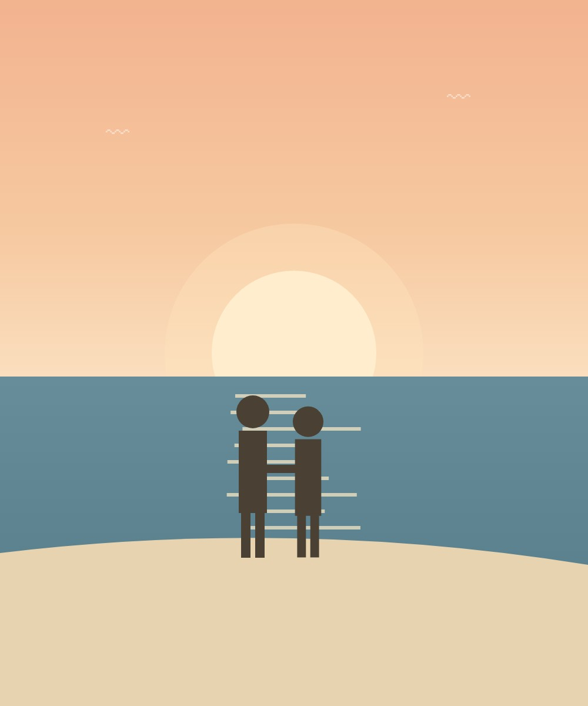
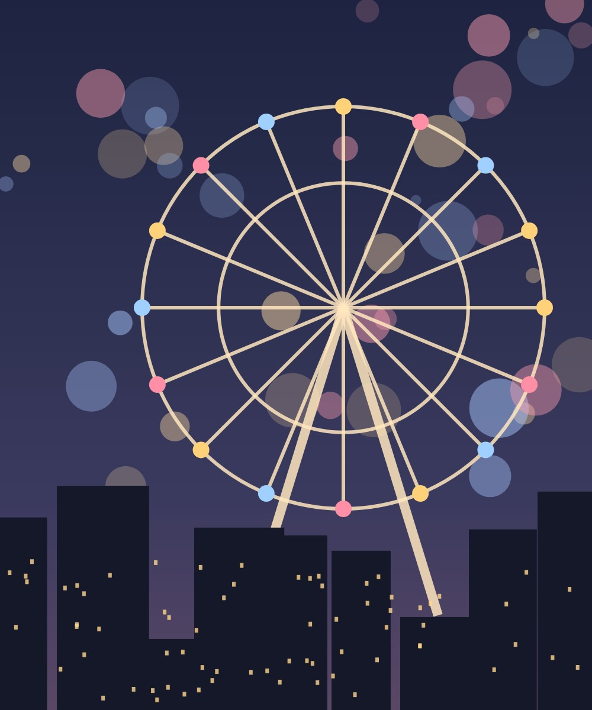
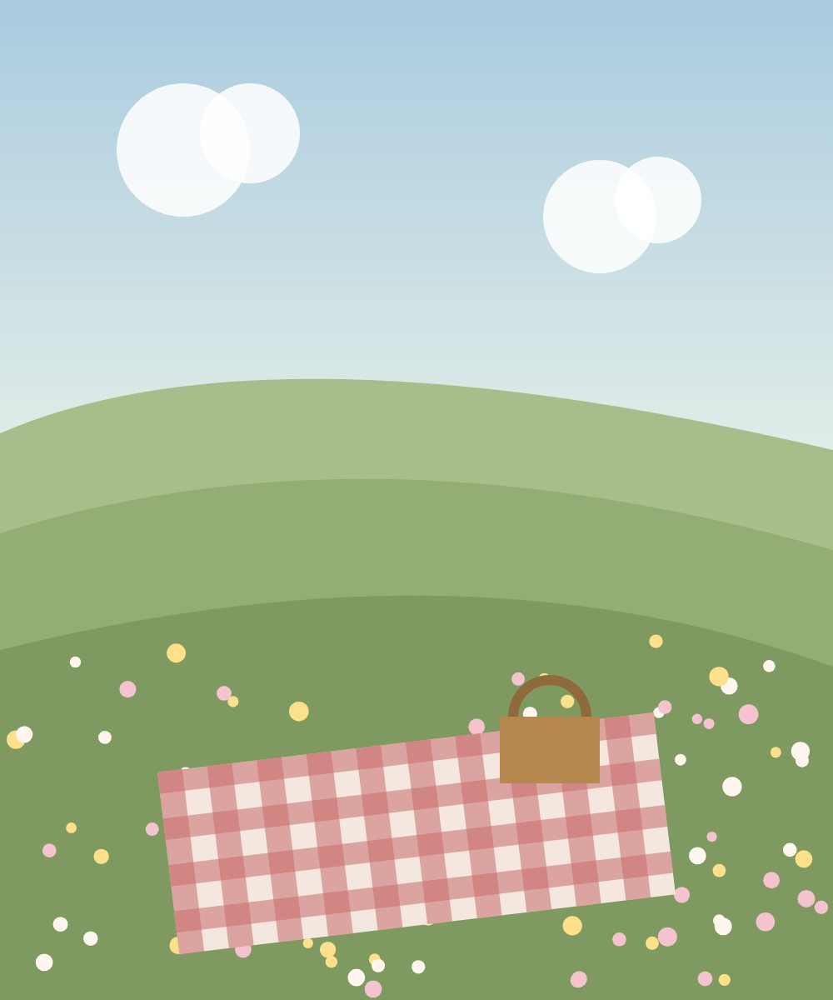

chapter 01
the beginning
est. 2022 · vol. 01
a little film for มิ้นท์
with love, ต้น
หนังสั้นของเรา ♪
chapter 01 — the beginning
เรื่องราวดี ๆ
มักเริ่มจากวันธรรมดาวันหนึ่ง
มิ้นท์&ต้น
ตั้งแต่ 14 มิถุนายน 2565
เราเดินมาด้วยกันแล้ว
days… and counting
14 มิถุนายน 2565
20 สิงหาคม 2565

31 ธันวาคม 2565

12 มีนาคม 2566

18 ธันวาคม 2566
every little moment
ทุกช่วงเวลาเล็ก ๆ ที่มีเธอ
ถึงมิ้นท์,
ขอบคุณที่อยู่ข้างกันในวันธรรมดา
และจับมือกันแน่นในวันที่ไม่ง่าย
ทุกความทรงจำในนี้ มีเธออยู่เสมอ
ปีหน้า… ไปสร้างเรื่องใหม่ด้วยกันนะ
— ต้น
และเรื่องของเรา…
to be continued, together.
ต้น ♡ มิ้นท์
สุขสันต์วันครบรอบนะ